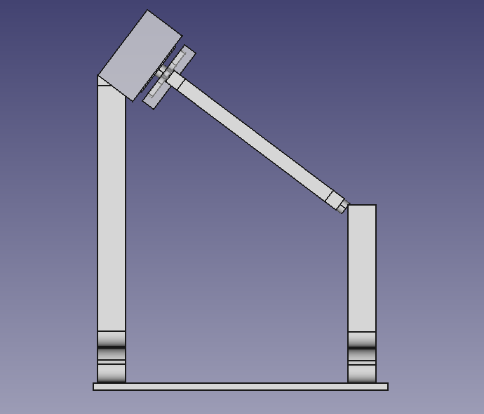

En la tercera tarea diseñamos las diferentes partes del de seguidor solar, inspirandonos de uno de los diseños de la tarea anterior, mejorandolo, o uniendo partes de diferentes diseños de la tarea anterior, representamos el diseño en 3D y preparamos el diseño para tareas posteriores.
Pulsa este enlace para acceder al diseño de FreeCAD.


